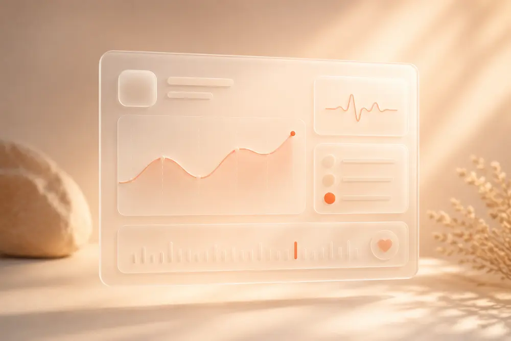
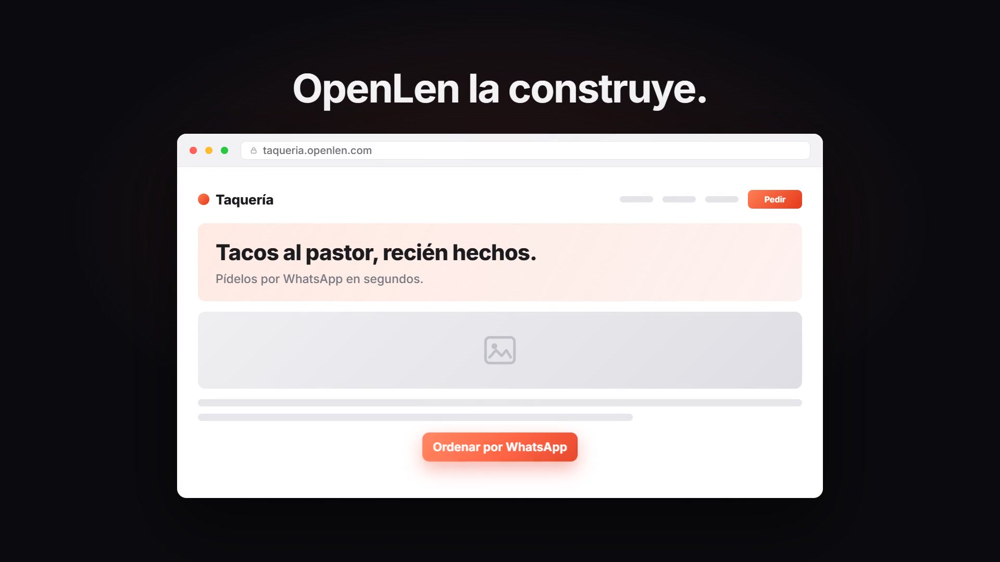

★ Estrella
En vivo
OpenLen
Describe una página, edítala y publícala en tu propio subdominio. La IA pone la estética.
Soy Jesús. Hago productos de software que salen a producción, no presentaciones bonitas que mueren en un Figma. Mi estrella es OpenLen, un constructor de landing pages con IA. También envié InariWatch y OrbitaPOS.
El hook —
Sin plataforma externa: la armé pieza por pieza y la publiqué con mi propio producto, en mi propio subdominio.
Si te gustó cómo se ve esto, ya conoces el producto.
Tres piezas enviadas. OpenLen sigue vivo; las otras dos, open source. Cada una resolvió primero un problema mío.
Describe una página, edítala y publícala en tu propio subdominio. La IA pone la estética.
Captura cada error de tu app Node antes de que lo haga tu usuario. Una línea para instalar.

Punto de venta para tiendas — web + app móvil. Cobra, controla inventario y saca tickets, sin complicaciones.
Una idea por la mañana. Algo en producción por la noche. Sin permiso, sin comité, sin excusas.

Diseño, escribo el backend, peleo con el deploy y vuelvo a empezar — todo solo, todo en producción. Builder solitario con manía por enviar: producto que la gente puede usar hoy, corriendo en mi propio Hetzner.
Cómo funciona
Describe una página. OpenLen la arma — HTML estático, servido desde disco.